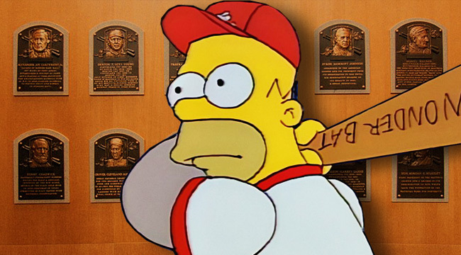

We chose to explore the top 10 players stats because we feel that best exemplifies the players that fantasy would want to choose for their team. The blog is also to showcase opinions on the progression of players. As well as the trades that are going along in the offseason.
 1:53 PM 12/5/2017